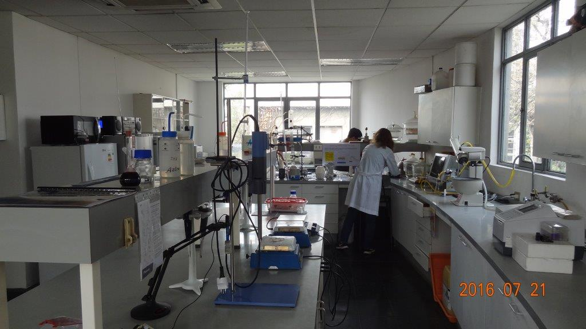
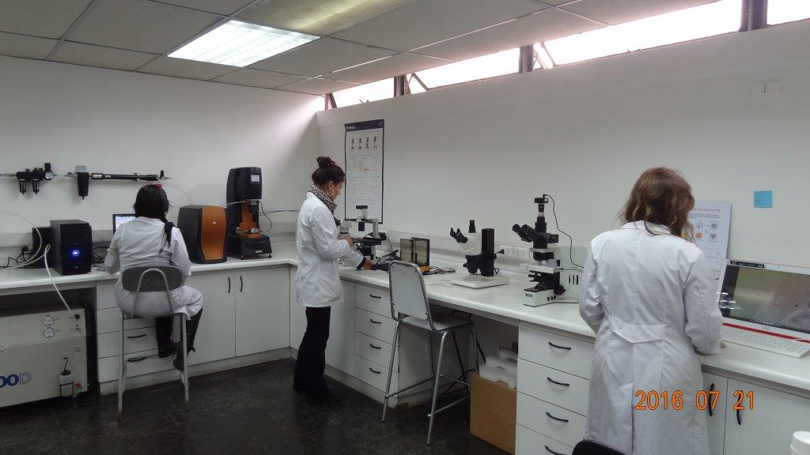
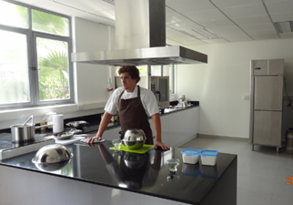
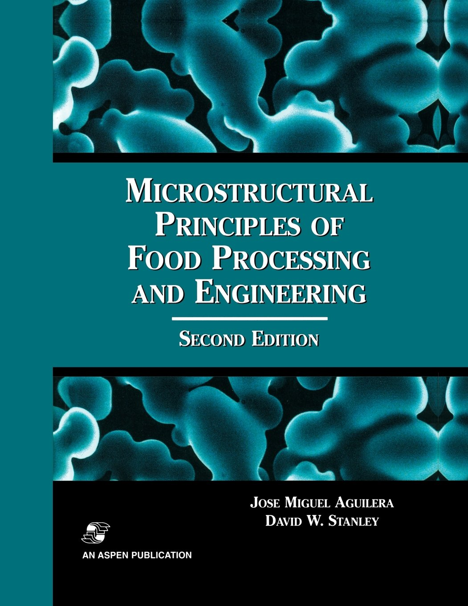
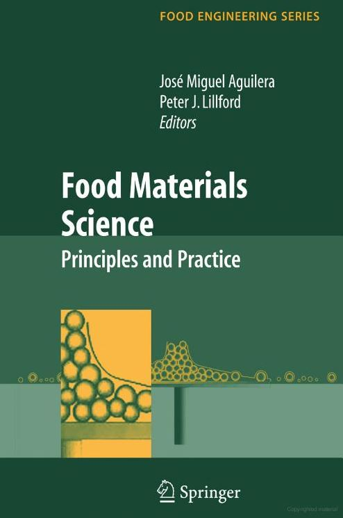
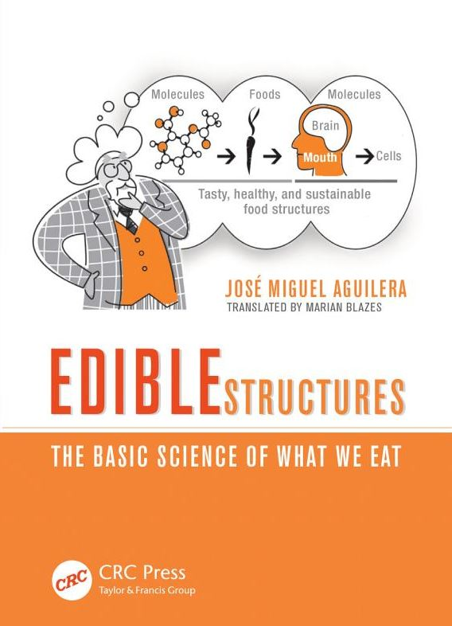
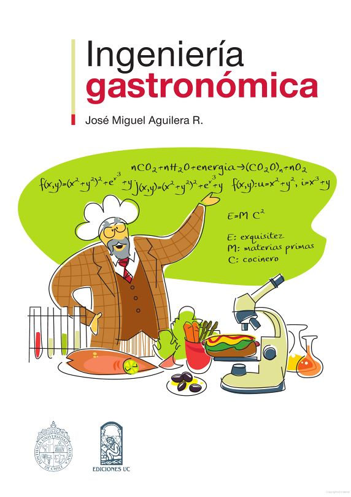

Nuestros Laboratorios

Laboratorio de Materiales Alimentarios
Este laboratorio está equipado con instrumentos para evaluar las propiedades mecánicas, reológicas, térmicas y ópticas de los alimentos.

Laboratorio de Microestructura de Alimentos
Alberga instrumentación para caracterizar las propiedades estructurales de los alimentos a distintas escalas usando modernas técnicas de microscopía.

Cocina Experimental
Una cocina de 60 m2, a cargo de un chef de investigación, está totalmente equipada para llevar a cabo preparaciones gastronómicas y desarrollar productos nuevos.
Equipo

José Miguel Aguilera
José Miguel Aguilera is a professor in the College of Engineering at the Pontificia Universidad Católica de Chile. A chemical engineer he received a master of science from MIT, a doctorate from Cornell University, both with specialization in food technology, and an MBA from Texas A&M University.

Loreto Muñoz
Doctor en Ciencias de la Ingeniería , Pontificia Universidad Católica de Chile. Doctor en Ciencias e Ingeniería de los Alimentos, Universidad de Santiago de Compostela. Diploma de estudios Avanzados, Universidad de Santiago de Compostela
Publicaciones

Microstructural Principles of Food Processing and Engineering
Aguilera, J.M. & D.W. Stanley. 1999. Microstructural Principles of Food Processing and Engineering. 2nd ed. Aspen Publishers Inc., Gaithersburg, MD.

Food Materials Science: principles and practice
Aguilera, J.M. & P.J. Lillford (Eds.) 2008. Food Materials Science: principles and practice. Springer Publishers, NY.

Edible Structures: the basic science of what we eat
Aguilera, J.M. 2013. Edible Structures: the basic science of what we eat. CRC Press, Boca Raton.

Ingeniería Gastronómica
Aguilera, J.M. 2011. Ingeniería Gastronómica. Ediciones UC, Santiago, Chile.